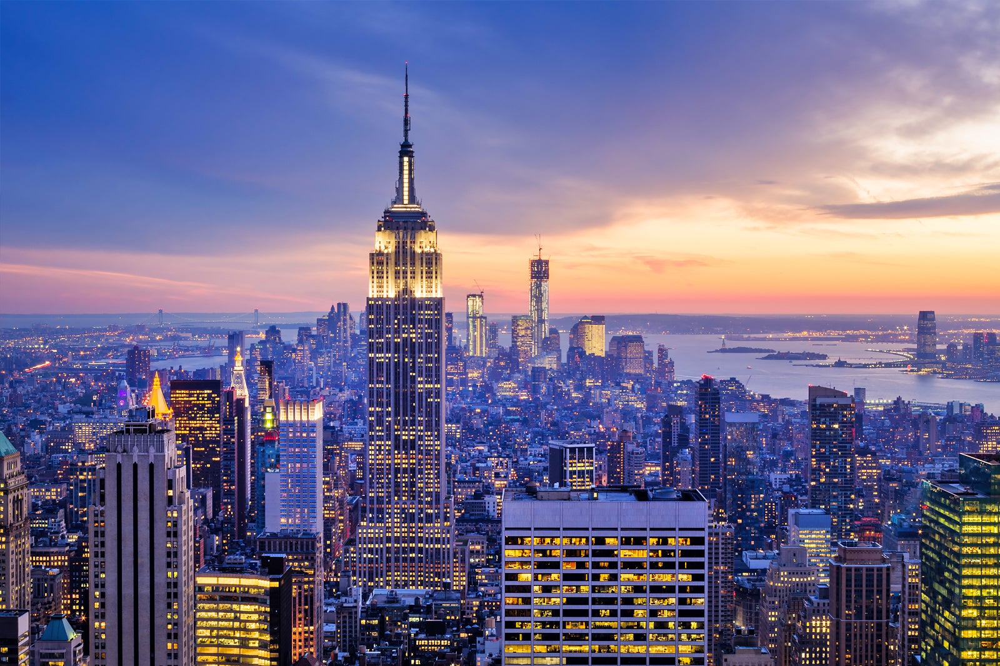

New York City, city and port located at the mouth of the Hudson River, southeastern New York state, northeastern U.S. It is the largest and most influential American
metropolis, encompassing Manhattan and Staten islands, the western sections of Long Island, and a small portion of the New York state mainland to the north of Manhattan.
New York City is in reality a collection of many neighbourhoods scattered among the city’s five boroughs—Manhattan, Brooklyn, the Bronx, Queens, and Staten Island—each
exhibiting its own lifestyle. Moving from one city neighbourhood to the next may be like passing from one country to another. New York is the most populous and the most
international city in the country. Its urban area extends into adjoining parts of New York, New Jersey, and Connecticut. Located where the Hudson and East rivers empty
into one of the world’s premier harbours, New York is both the gateway to the North American continent and its preferred exit to the oceans of the globe. Area 305 square
miles (790 square km). Pop. (2010) 8,175,133; New York–White Plains–Wayne Metro Division, 11,576,251; New York–Northern New Jersey–Long Island Metro Area, 18,897,109;
(2020) 8,804,190; New York–Jersey City–White Plains Metro Division, 12,449,348; New York–Newark–Jersey City Metro Area, 20,140,470.
| Elected Officials | Tourist Spots |
|
|
Reference:
https://www.britannica.com/place/New-York-City
Go back to Map Page